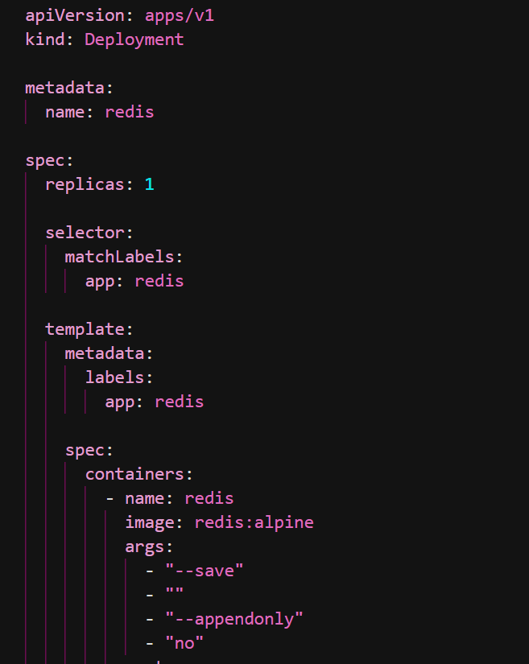
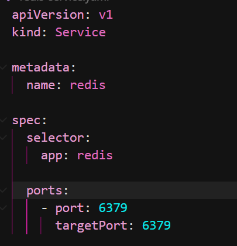
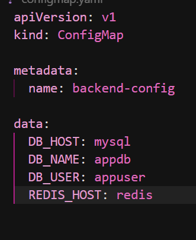
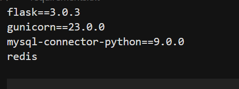
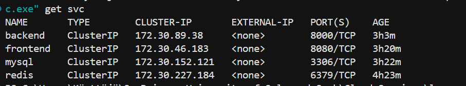
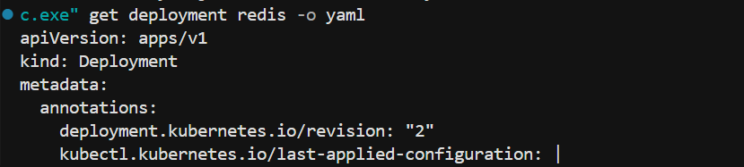
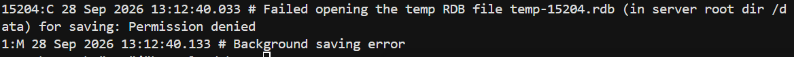
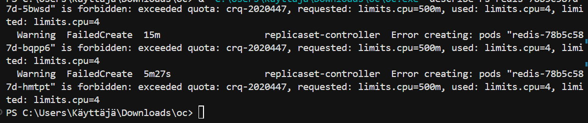

1. Introduction
In Week 5, I continued working with the containerized application from Week 4. The Week 4 application contains an Nginx frontend, a Flask/Gunicorn backend and a MySQL database deployed on CSC Rahti.
The Week 5 work had two parts. In Part A, I answered four questions about SAML and OAuth, YAML and JSON, AI cloud platforms, and open data portals. In Part B, I extended the application by adding Redis as a separate cache component.
Week 5: Frontend (Nginx) → Backend (Flask/Gunicorn) → Redis Cache + MySQL
2. Part A - Questions
2.1 What is the difference between SAML and OAuth?
SAML and OAuth are both used in systems involving identity and access, but they have different purposes. SAML stands for Security Assertion Markup Language. It is mainly used for authentication and Single Sign-On (SSO). OAuth is mainly an authorization framework. It allows an application to receive permission to access resources from another service without receiving the user's password.
SAML normally involves an Identity Provider (IdP) and a Service Provider (SP). The Identity Provider verifies the user's identity. After the user logs in, the Identity Provider sends an authentication assertion to the Service Provider. This allows the user to access the service without having a separate login for every application.
For example, a university could have one central login system. A student could use the same university account to access Moodle, email and other university services. The central identity system can act as the Identity Provider, while the individual applications act as Service Providers. This is a typical SAML/SSO use case.
OAuth works differently. It is useful when an application needs permission to access information or an API from another service. Instead of giving the application a password, the user authorizes the application and an access token is provided. The token can have limited permissions.
For example, imagine a calendar application that wants to read a user's calendar. With OAuth, the user can give the calendar application permission to read the calendar. The application receives an access token and uses it to access the permitted data. The user's password is not given to the calendar application.
OAuth is also commonly seen with services that provide options such as "Sign in with Google" or "Sign in with GitHub". More precisely, OAuth itself is about authorization. OpenID Connect adds an identity layer on top of OAuth when authentication is needed.
Aa company could use SAML when it wants enterprise Single Sign-On between one identity system and several applications. OAuth is more suitable when an application needs delegated access to another service or its API. The main difference is that SAML commonly communicates authentication information, while OAuth provides delegated authorization.
2.2 What is YAML and why is it used in Kubernetes/Rahti? How is it different from JSON?
YAML is a human-readable format commonly used for configuration. It uses indentation to describe the structure of data. Kubernetes and Rahti/OpenShift commonly use YAML manifests to describe resources such as Deployments, Services, ConfigMaps and other objects.
YAML is useful in Kubernetes because a resource can be described in a readable document. The document can contain the resource type, name, labels, replicas, containers, ports and other configuration. Kubernetes reads the manifest and creates or updates the resource in the cluster.
I used YAML directly in my Week 5 project. I created redis-deployment.yaml for the Redis Deployment and redis-service.yaml for the Redis Service. This made Redis an independently managed component with its own Deployment and Service.
YAML and JSON can both represent structured data, but they are written differently. YAML normally uses indentation and fewer brackets. JSON uses curly brackets, square brackets and quotation marks. YAML can also contain comments, which can be useful when humans maintain configuration files.
YAML can be easier to read when a Kubernetes configuration becomes large. For example, a Deployment may contain labels, selectors, containers, replicas and ports. YAML shows this hierarchy through indentation. JSON can represent the same information, but normally uses more brackets and punctuation.
A disadvantage of YAML is that indentation is important. During my Week 5 work, I initially had a YAML formatting error when applying the Redis Deployment. After correcting the YAML structure, Rahti accepted the Deployment configuration.
So, YAML was not only a theory topic in this assignment. I used it as the actual configuration format for the Redis component in Rahti.
2.3 Pick two or three AI cloud platforms and compare their offerings.
AI cloud platforms provide managed artificial intelligence and machine-learning services. Instead of building and operating all AI infrastructure independently, developers can use cloud APIs, managed models and development tools provided by a cloud platform.
Three examples are Amazon Web Services (AWS), Microsoft Azure and Google Cloud. All three provide AI services, but they have different products and integrations.
AWS provides services such as Amazon Bedrock and Amazon SageMaker. Bedrock provides managed access to foundation models, while SageMaker provides tools for developing, training and deploying machine-learning models.
Microsoft Azure provides services including Azure AI Foundry and Azure OpenAI. Azure also provides AI capabilities for areas such as language, speech and vision.
Google Cloud provides Vertex AI. It can be used for working with AI models and for developing and deploying machine-learning applications.
These services could add an AI feature to my Week 4 application. For example, the Nginx frontend could contain a simple chatbot interface. The Flask backend could receive the user's message, send it to an AI cloud service through an API, receive the response and return it to the frontend.
Another example would be text summarization. A user could send a text through the frontend, the Flask backend could send the text to an AI service, and the result could be returned to the user. API credentials should stay on the backend side and should not be exposed in the frontend.
The platforms differ in their available models, services, pricing, APIs and integration with their wider cloud ecosystems. The appropriate choice depends on the application's requirements.
2.4 What are open data portals and why does the data format matter?
Open data portals are websites where governments, public organizations and other institutions publish datasets that people can access and reuse. Examples include Finland's avoindata.fi and the European Data Portal.
Open datasets can contain transport information, weather data, demographic statistics, public spending information, environmental information and many other types of data. Developers can use the datasets to create applications, visualizations and research projects.
The format matters because it affects how easily software can read and reuse the data. A machine-readable format allows a program to process the dataset automatically instead of requiring a person to copy information manually.
CSV is useful for tabular information. For example, a dataset containing bus stops and timetable information could be stored as CSV and loaded into Python. JSON is useful for structured data and web applications because it can represent objects, lists and values.
For example, imagine that a city publishes bus timetable data. If the information is available through a JSON API, a web application can request the latest information automatically and display the next buses. If the information were only available as a scanned PDF, a developer might need to manually extract the information before using it.
Documentation also matters. A dataset should explain what its fields mean, how often it is updated and what format is being provided. A machine-readable dataset can still be difficult to reuse if its structure is not documented.
A good open data is not only about making information public. It should also be useful, documented and machine-readable so that developers can reuse it in applications.
3. Resources
- SAML and OAuth: Okta - SAML vs OAuth
- YAML: YAML official website
- Kubernetes: Kubernetes documentation
- Finnish Open Data: avoindata.fi
- European Open Data: European Data Portal
4. Part B - Hands-on: Redis Cache
The Week 5 hands-on exercise provided three extension options: Redis Cache, OAuth Login and Public API integration.
I chose Option 2 - Add Redis Cache. The goal was to add Redis as a fourth independently deployed component and use it from the Flask backend for cached data.
I kept the existing Week 4 Nginx frontend, Flask/Gunicorn backend and MySQL database. Redis was added as a separate Deployment and Service instead of being placed inside the backend container.
Backend (Flask/Gunicorn) → MySQL Database
4.1 Redis Deployment
I created redis-deployment.yaml and deployed Redis as its own Deployment in the Week 5 Rahti project. The Deployment uses the redis:alpine image, one replica and port 6379.

My actual redis-deployment.yaml.
4.2 Redis Service
I created redis-service.yaml as a separate Service. The Service provides internal communication between the Flask backend and the Redis pod. It uses port 6379 and selects the Redis pod with the app: redis label.
Redis does not need a public Route because it is an internal component used by the backend.

My actual redis-service.yaml.
4.3 Backend Integration
I added the Redis Python package to the backend requirements and configured the Flask backend to connect to the Redis Service. The Redis Service name is redis, so the backend can find Redis through the internal Rahti network.

My actual Week 5 ConfigMap showing the Redis host configuration.
The Redis package was added to the backend requirements.

My actual requirements.txt showing the Redis dependency.
The Flask Redis connection was also implemented in the backend. The actual code is part of my project and is represented by the project screenshots rather than recreated in this documentation.
4.4 Deployment Status
I checked the Week 5 deployment status in Rahti. The application has separate workloads for the frontend, backend, MySQL and Redis.

Week 5 Deployment and Pod status.
4.5 Services
I also checked the Services in the Week 5 project. Redis has its own Service on port 6379, alongside the existing application Services.

Week 5 Services, including the Redis Service.
4.6 Redis Deployment in Rahti
The following screenshot shows the Redis Deployment running as its own component in Rahti.

Redis Deployment in the Week 5 Rahti project.
4.7 Visitor Counter Test
The visitor counter is included as a functional application test. It shows the visitor-counting functionality used with the application.

Visitor counter test.
4.8 Communication Between Components
The public user reaches the application through the Rahti Route. The Route sends traffic to the Nginx frontend. The frontend communicates with the Flask/Gunicorn backend through the backend Service.
The Flask backend is the component that communicates with Redis and MySQL. Redis is reached through the internal Redis Service, while MySQL is reached through the MySQL Service.
Flask/Gunicorn Backend → Redis Service
Flask/Gunicorn Backend → MySQL Service
This separation gives each component a clear responsibility. Nginx serves the frontend, Flask handles the application logic, Redis provides temporary cache storage, and MySQL remains the persistent database.
4.9 Production Readiness
Redis can improve performance because frequently used values can be kept in memory instead of repeatedly requesting the same information from the database. This can reduce database workload.
Redis should not replace MySQL as the persistent database in this application. Cache data can disappear when Redis is restarted or recreated, so important application data should remain in MySQL.
A production application also needs a cache invalidation strategy. If a value changes in MySQL, the application needs to decide when the cached value should be updated, deleted or allowed to expire. Otherwise, an old cached value could be returned.
Availability and monitoring would also be important in a production environment. The current exercise uses one Redis replica because this is a course project. A production system could require a different Redis deployment strategy, monitoring and additional resources.
Redis is kept as an internal Service and is not exposed through a public Route. Credentials and other sensitive information should also be handled securely and should not be committed to GitHub.
4.10 Problems and Solutions
Problem 1 - Redis RDB permission error
During testing, Redis repeatedly failed to create its temporary RDB file in /data. The Redis log showed a permission denied error and background saving failed.

Actual Redis error from the Week 5 terminal.
Because Redis is being used as a temporary cache in this project, I changed the Redis configuration to disable RDB snapshot saving and append-only persistence. This avoids requiring the cache to persist its data to the container filesystem.
Problem 2 - Rahti CPU quota
When the Redis Deployment was updated, Rahti could not create the replacement Redis pod because the project had already reached its CPU quota. The actual error showed that 4 CPUs were already being used while the new pod requested another 500m CPU.

Actual Rahti CPU quota error during Redis Deployment replacement.
The existing Redis pod remained running. This showed that the problem was a cluster resource-quota limitation rather than a problem with the Redis Service itself. It also showed why both application logs and cluster resource information are important when troubleshooting cloud deployments.
5. Evidence and Requirements
The Week 5 work demonstrates the required extension of the Week 4 application with one new independently deployed component.
- Four Part A questions are answered in full sentences with examples.
- Redis is deployed as its own Deployment.
- Redis has its own Service.
- The architecture shows the new Redis component.
- Deployment and Pod status is shown with a real screenshot.
- Service status is shown with a real screenshot.
- The backend-to-Redis communication is explained.
- Production-readiness considerations are discussed.
- Real Redis and CPU-quota problems are documented with screenshots.
- No credentials are included.
6. GitHub Repository
My Week 5 project repository is:
7. Week 5 Application
The Week 5 application is available through the CSC Rahti Route:
8. Cleanup
The Rahti resources used for this assignment are temporary course resources. After the peer-review period is finished, I will remove the unnecessary resources or make the application private so that unused public cloud resources are not left running.
9. Conclusion
In Week 5, I extended my Week 4 containerized application by adding Redis as a separate cache component. I created a Redis Deployment and Service, connected the Flask backend to the Redis Service, added the Redis dependency and checked the resources in Rahti.
The hands-on work also showed that adding a cloud component requires more than application code. The new component needs its own Deployment, Service, configuration, networking and testing. I also had to troubleshoot both an application-level Redis persistence problem and a cluster-level CPU quota problem.
The Part A topics connect the hands-on work to wider cloud concepts. YAML was directly used for the Kubernetes/OpenShift configuration, while the security and reliability discussion helped me consider how a Redis cache should be used in a real production environment.